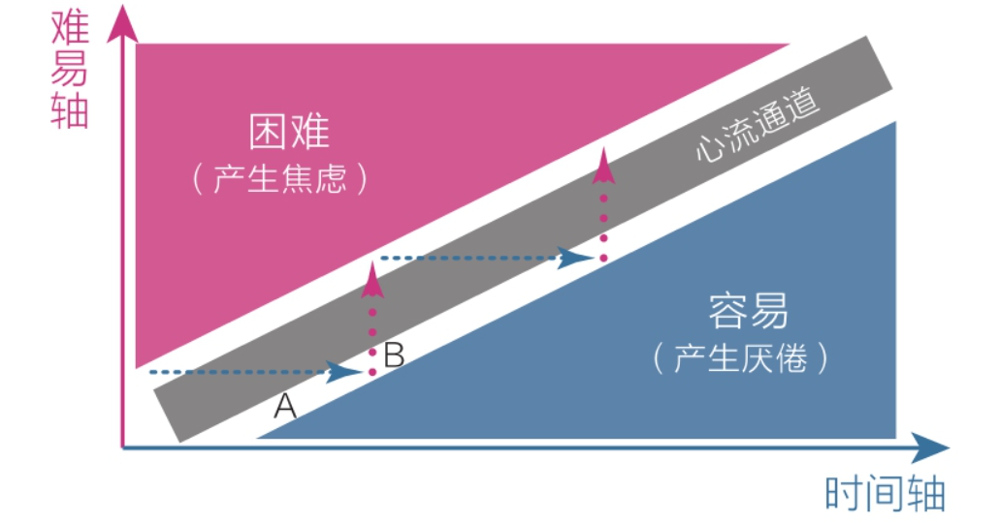

认知觉醒读书笔记
1.1、大脑：重新认识你自己
三层大脑
| 演进过程 | |
|---|---|
| 爬行动物 | 本能脑 |
| 哺乳动物 | 情绪脑 |
| 人类 | 理智脑 |
| 三层大脑对比 | |||||||
|---|---|---|---|---|---|---|---|
| 本能脑 | 低级 | 强大 | 婴儿时期趋于完善（2岁） | 神经元细胞数量多，距离心脏近 | 运行速度快 | 控制大脑能力强 | 更接近原始社会->生存->及时享乐、避难趋易、急于求成 |
| 情绪脑 | 低级 | 次强 | 青春期早期（12岁） | ||||
| 理智脑 | 高级 | 弱小 | 成年早期（22岁） | 数量少，距离远 | 速度慢且耗能 | 控制大脑能力弱 | 更接近现代社会 |
结果
- 明知读书重要，却转身掏出手机
- 明知跑步有益，却两天没了下文
- 明知要事优先，却围绕琐事打转
大多数时候我们以为自己在思考，实则都是对自身行为和欲望的合理化
成长是克服天性的过程
提升理智脑 ≠ 削弱本能脑和情绪脑
理智脑指挥，本能脑行动
1.2、焦虑的根源
焦虑的形式：
- 完成焦虑：内在欲望太广或时间安排太紧从而无法做到从容
- 定位焦虑：将起步的自己与他人取得的成就相比
- 选择焦虑：选择太多，不知道如何抉择
- 环境焦虑：环境迫使
- 难度焦虑：不下决心认真对待难度大的事情，而在周围打转
焦虑的原因：
- 总结起来就是：相同时做很多事，又想立即看到效果（欲望与能力差距较大）
- 人的一切痛苦本质上都是对自己的无能的愤怒 ———— 王小波
1.3、耐心：得耐心者得天下
宏观上：
-
复利效应：
-
舒适区边缘
微观上：
- 学习过程与权重
- 过程：学习————思考————行动————改变
- 权重：改变 > 行动 > 思考 > 学习
- 人们在学习过程中总是看到自己学习了多少，而不是看到自己改变了多少
- 书中的一两个观点改变了我 > 我今天读书5个小时
- 平台期
拥有耐性：
- 接纳天性（缺乏耐心）
- 延迟满足（该有的享受一点也不会少，只不过不是现在，而是在完成该做的之后）
- 提升认知，看到事情的深层意义
- 享受高级乐趣（学习的乐趣，健身的乐趣）取代低级乐趣（玩手机）
2.1、模糊：人生是一场消除模糊的比赛
意识分层：潜意识负责生理系统，意识负责社会系统
意识分层导致的问题：模糊
产生模糊的原因：
- 处理信息速度不对等
- 意识难以左右潜意识，但潜意识可以左右意识
人们不愿消除模糊，因为消除模糊意味着走出舒适区，人们不愿做这种高耗能的事情， 而总是在重复那些已经掌握的事情，从而导致自己无法进步
所有的困难只因为我们对其的认知模糊，这种模糊阻碍了我们，导致拖延、不愿面对问题， 如果我们能够在一开始就主动消除模糊，就不会徒增烦恼
所有的痛苦都不会凭空消失， 唯一的办法就是在它们变得模糊，在它们进入潜意识前正视它、拆解它
选择模糊会导致行动力不足， 解决办法是：细化过程，建立一条单行道，消除选择
2.2、感性：顶级的成长竟然是“凭感觉”
潜意识代表感性，意识代表理性。意识虽然理智但处理速度较慢，潜意识虽然更接近原始思想，但速度极快。 两者之前的速度差距造成了模糊的认知。潜意识已经察觉到的信息，意识却无法捕捉。 所以先用感性选择，再用理性思考。在读书时读到触动的地方马上停下，询问自己为什么触动，用理性进行思考。 这种感性选择理性思考的方法就是小事听从你的脑，大事听从你的心。
3、元认知——人类的终极能力
3.1、元认知：成长慢，是因为你不会“飞”
元认知能力可以被定义为自我审视，主动控制，防止被潜意识左右的能力。 成长中我们在学校学习的主要是学习、理解、记忆能力，而观察、反思、判断、选择这种元认知能力却非常少用， 这就是为什么有的人在走出学校之后自控能力并不是很强的原因，元认知需要我们主动锻炼，就像锻炼肌肉一样，越用越强。 那么如何主动开启元认知能力，秘诀就是停下几秒，给理智脑一点思考的时间去自我审视，主动控制。
3.2、自控力：我们生而为人就是为了成为思维舵手
元时间的概念：元时间是在两件事情，两个阶段或者两种状态之间， 例如下班回到家就是从通勤到家，这时选择拿起手机还是拿起书籍就是一种选择， 元时间的选择会影响下个阶段，如果拿起了手机，那下个阶段就是什么都没做，如果选择了书籍，就正确的控制了自己。 每个元时间都是锻炼元认知能力的好机会，抓住这些机会，审视自己，主动控制。 模糊会影响元认知能力，在大脑对未来的时间充满模糊的时候就是行动力最弱的时候， 解决办法就是消除模糊，思考需要做的事情，给它们排序，让大脑中的模糊变得清晰明确。 所以总结起来就是对当下的时间，全天的安排，人生的目标都有清晰明确的认识，这才是成为思维舵手的关键。
4、专注力——情绪和智慧的交叉地带
4.1、情绪专注：一招提振你的注意力
有时我们在做一件事，脑子里却想着另外一件事，这不是一心二用而是不专注的表现。 我们可以将一件事分为行动上和感受上两部分。起初在做一件事情时两者是统一的， 当这件事越来越熟悉，越来越熟练之后，所花费的注意力也就越少，这时就表现出了身体与内心分离的现象。 分心的原因有两种：一种是觉得当下的事情太无聊，一种是觉得当下的事情太痛苦。不管哪种都是让思想逃避现实，去想象天马行空。 思想可以回到过去也可以幻想未来，但就是不会回归当下。然而人生就是由无数个当下所组成的，如果没有专注力，如何把握好人生呢。 克服分心的方法是收回感受，让它回到事情本身上来。
- 跑步时悉心体会抬腿摆臂，呼吸吐纳和迎面的微风。
- 睡觉时感受身体的紧张与松弛。
- 吃饭时感受每一口饭菜的香甜，体会味觉从有到无的过程。 身心合一的过程不是专注当下而是享受当下。
4.2、学习专注：深度沉浸是进化双刃剑的安全剑柄
弱者极易分心，被身旁的事物所打扰，无法学习。而强者却会主动的练习专注能力，去热闹的地方看书学习，这使他们拥有了随时随地进入深度阅读和思考状态的能力。 深度沉浸的方法有以下几点：
- 定义明确的目标：比如练琴时，告诉自己连续三次不犯任何错误、以适当的速度弹奏完曲子。而不是“我要练琴半小时”这样宽泛的目标。 将大目标分解为小目标使其明确化。
- 极度专注：大脑在学习时有两种模式：意识层的专注模式和潜意识的发散模式。 从名称上来解释专注模式是在一个固定的区域的思考，而发散模式就是不固定的区域的联想思考。 当我们认真思考问题却找不到答案时，就需要发散模式帮助我们寻找答案， 而发散模式属于潜意识层面，想要使用发散模式就必须彻底关闭意识层面的专注模式， 所以做法就是当我们无法想到答案时，先放弃思考而去做其他毫不相干的事情，彻底关闭意识，让潜意识的发散模式去寻找答案。
- 有效的反馈：任何事情都需要形成闭环来提高，如果只是一味的努力，而没有反馈就无法认识自己的不足，一直练习自己已经学会的地方，使自己一直处在舒适区。 形成反馈可以通过反思，复盘来获得。
- 始终处在拉伸区：一味的重复已经掌握的事情毫无意义，并会使自己感到厌倦，而进入困难区会感到挫败，焦虑。唯一的办法就是在舒适区和困难区中间 
练琴的例子：
今天只练第一节，后面的先不练（把大目标拆分成小目标）， 然后只练刚才弹错的地方（在拉伸区练习）， 只要能连续流畅地弹3遍不出错就算完成（目标具体清晰）。 练习过程中，我会及时纠正她的指法和按键错误（及时有效的反馈）， 这样，她很快进入了专注状态（沉浸其中），不一会儿就把第一节弹得很好了。
5、学习力——学习不是一味地努力
5.1、匹配：舒适区边缘，适用于万物的方法论
匹配自己的计划才是能让你坚持最久的计划。一开始就给自己定制一个宏伟的目标，往往会使自己难以坚持下去，极其痛苦。 最好的方式是在舒适区外的拉伸区进行练习，当你适应了当前的拉伸区就可以试着再向外走一点，离舒适区再远一些。 当我们下定决心开始学习时，便会盲目跟随优秀者的脚步，他看什么书我就看什么书，他做什么题目我也做什么题目。 这样是及其不可取的，用匹配原则就可以知道其中的原因，别人的拉伸区可能是是你的困难区，这样你不仅无法进步，还会容易放弃，自我焦虑 主动匹配自己的拉伸区，适合自己的才是最好的。
前文中提到的定义明确目标也符合匹配拉伸区的原则，当我们将困难区的大目标拆解成拉伸区的小目标，就更驱使我们做出行动，进入拉伸区。 在拉伸区需要明确关注点，关注的不是那些无聊的、已经学会的，而是那些还没有掌握的、出错的地方，然后不断重复直到将拉伸区变为舒适区
距离我们太远的事物，我们通常无法把握，无论它们是令人痛苦的还是令人享受的 当我们突然有了大量的时间、金钱、等等，我们通常没有能力控制自己有效的利用这些。 大量的时间和金钱意味着突然多出了很多选择，而做选择是及其困难耗能的事情，没有能力合理的处理就意味着将会顺从自己的天性去享乐 所以人生最理想的状态就是持续的获得与自己能力匹配的财富和自由，不用羡慕旁人，因为即便将他人的成就给你，自己也无法把握，因为不匹配
5.2、深度：深度学习，人生为数不多的好出路
现在随处可见“精品课”、“几日速成”、“干货分享”等字眼，这些所谓的速成干货都是浅度学习的方法。 在进行浅层学习时，我们输入的是别人已经咀嚼过的知识，是一种快餐式的知识，并且只注重输入，好像看过了这些知识就已经全部掌握了， 这是一种浅层的、低级的学习方法。
而深度学习注重的是学习的输入和输出，输出指的是将学到的知识与现有的知识体系连接起来， 将学到的知识用自己的知识去解释，是新的知识成为自己知识体系中的一部分，然后将这些知识传授或向他人讲解。 如果发现自己不知道从何讲起或说不清楚，那么十有八九还没有掌握这些知识。输入与输出将学习知识的过程形成闭环，学以致用，进行输出， 而输出必然会带来新的输入形成反馈，如此循环往复，知识会越来越精确和深刻。
进行深度学习的几个方法：
- 学习第一手知识：别人讲的课程时经别人咀嚼过的、二手的、快餐式的知识，而那些原著或论文才是值的精读和细细品味的经典。
- 进行记录：有了知识的输入之后，输出才是检验知识是否吸收的标准，用自己的语言和理解解释学到的知识也是一种输出， 这个过程就是在用自己原有的知识来解释新学到的知识，是缝补的过程。
- 反思生活：反思、自省其实也是输出的一种形式，反思的目的是为了获得反馈，帮助自己发现不足和生活中的底层关系， 深度学习可以用于生活的方方面面。
最后，深度学习并不意味着放弃浅度学习，而是以深度学习为主。不同的浅度学习的输入带给我更多元的信息，接触到更广的领域， 但无论如何浅度学习只能带给你不一样的视角，深度学习的输出还是需要我们自己去体会，去践行。 专注与深度学习，同时对其按学习保持开放，毕竟深度之下的广度才是有效的。


评论